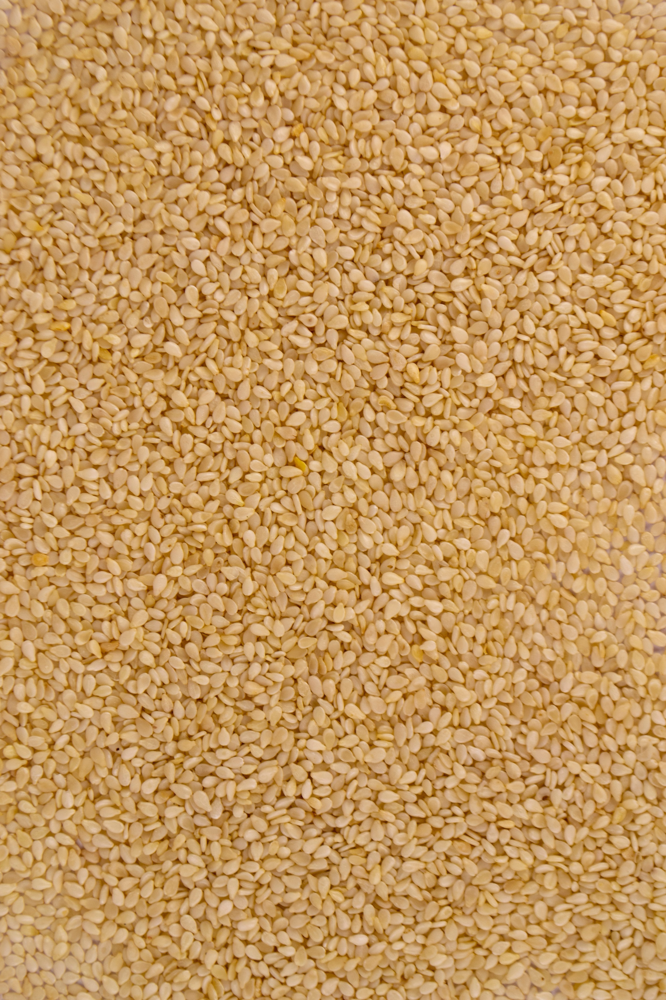
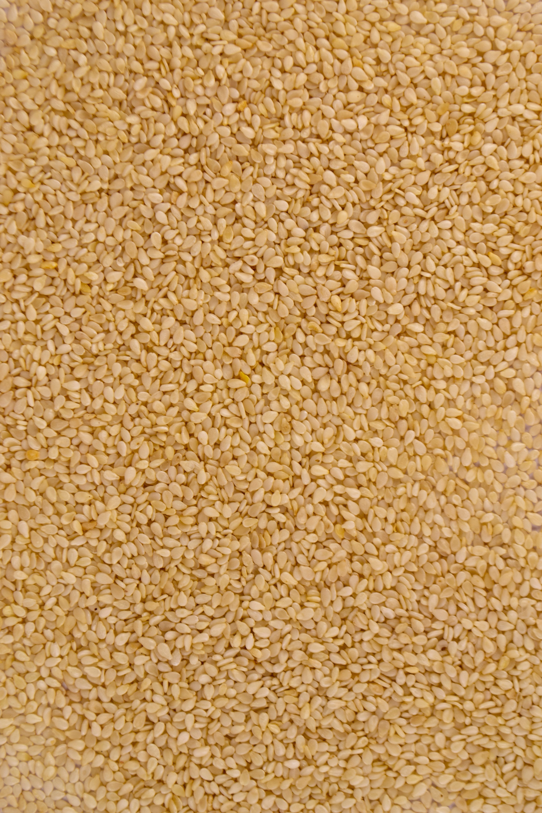
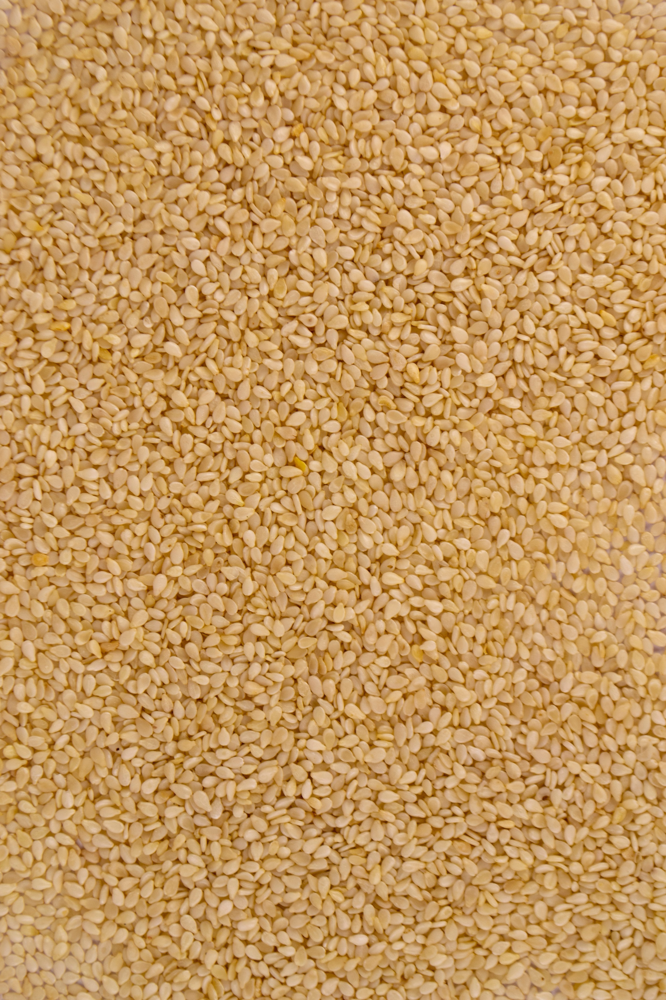
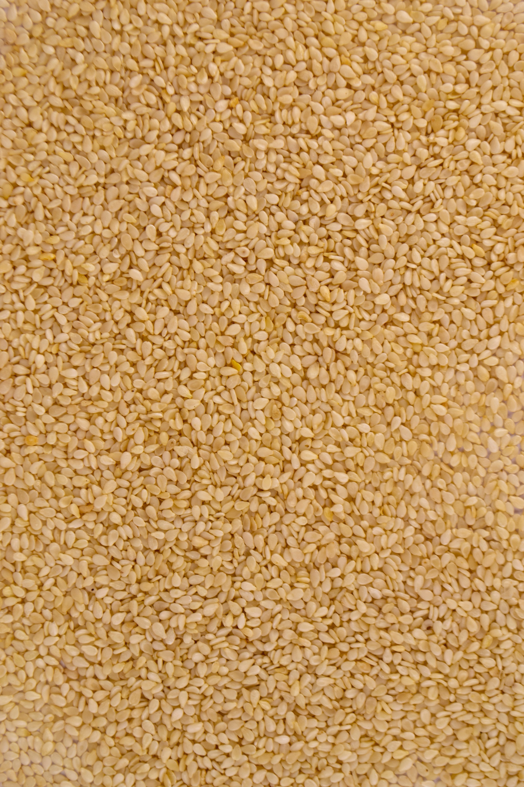

Asian Cucumber Salad

 



Here’s a simple recipe for Asian Cucumber Salad, that I think you will fall in love with. It’s fast and easy and light and delicious! Cool, refreshing cucumbers are just what I crave during the hot summer months and this salad is no exception. It hits all the flavor notes as well- such a great combo!